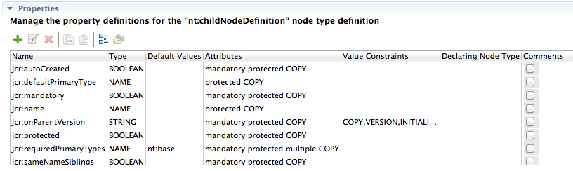

|
|
ModeShape Tools - CND Editor |
The CND Editor's Properties Table displays the property definitions for the selected node type definition. A property definition can be edited using the Property Editor.
Here is what the Properties Table looks like:
The table's toolbar contains buttons that do the following:
| Add Property Definition | opens the Property Editor which allows you to create a new property definition which is then added to the selected node type definition |
| Edit Property Definition | opens the Property Editor which allows you to edit the selected property definition |
| Delete Property Definition | deletes the selected property definition from the selected node type |
| Copy Property Definition | copies the selected property definition to the system clipboard |
| Paste Property Definition | pastes into the selected node type definition a property definition from the system clipboard |
| Show Inherited Property Definitions | indicates if property definitions inherited by the selected node type definition are displayed (only from node types within this CND or from built-in CNDs are currently supported) |
| Open Declaring Node Type Definition | selects the node type definition that declares the selected property definition (if declared within the same CND) |
Copied property definitions can be pasted into the same CND editor or into a different CND editor.